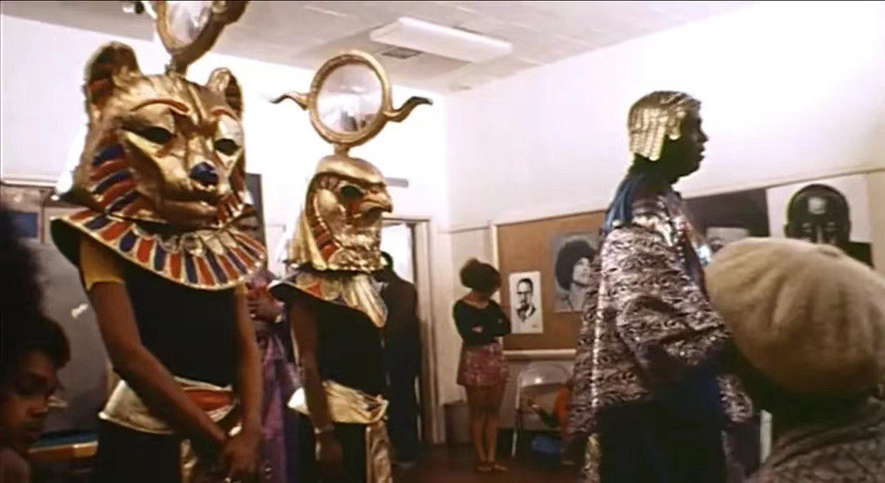

Sun Ra was a famous jazz artist who contributed a lot to the experimental music focusing on the topics of "cosmic philosophy" and Afrofuturism. This project designed a set of posters for his jazz band Sun Ra Arkestra. The design was expanded from their songs from differnet albulms.
Poster Design
Illustrator
Afrofuturism is a cultural aesthetic, philosophy of science and philosophy of history that explores the developing intersection of African diaspora culture with technology.
In Sun Ra's self-made movie Space is the Place, Sun Ra showed his contemplation of Afrofuturism to his audience. For Sun Ra, music cannot be separated from the theme of space, which represents the ultimate exploration of existence. In the movie, when Sun Ra was speaking to the black people in the community center, he said "We are all myth. We do not exist in this society." On the one hand, it implies the injustice that groups like black people, and females, face in the society. On the other hand, it provokes everyone to contemplate on their existence. Is Earth the ultimate place to hold existence? Space might give us a hint. And for Sun Ra, music is the fuel of his spaceship for that kind of exploration, as he also mentioned in the movie.
For the first verison, I used the straight lines to mimic shooting stars in each poster to give a sense of space. For the second version, I used a repeated figurative element in each poster that could echo the song's name. For the third version, the geometric shapes and typography together formed a figurative presentation for each song. At last, I chose the third version to expand my design. The bold typeface and shapes made me feel more aligned with the music of Sun Ra Arkestra -- Dynamic, Vigorous, and Exploring.